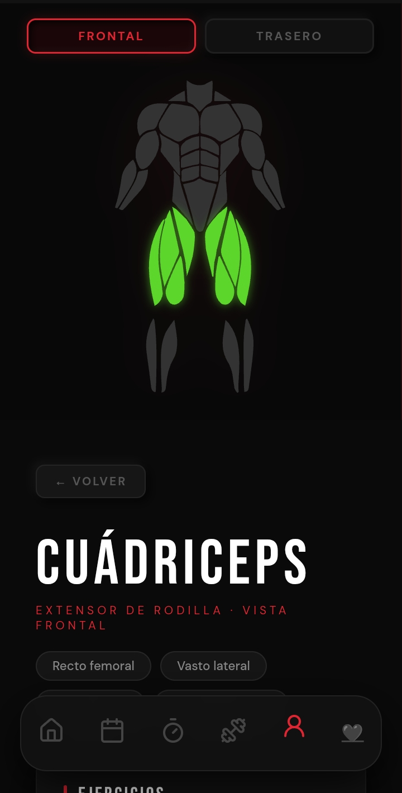

Systux · Entrenamiento
Calistenia 2.0
Entrena sin excusas. Un sistema progresivo que construye fuerza real desde cero hasta dominio avanzado — sin gimnasio, sin equipo, sin pretextos.

Racha diaria
Construye el hábito, no solo el músculo
Registra cada sesión, mantén tu racha activa y ve cómo la consistencia se convierte en resultados visibles semana a semana.

Anatomía interactiva
Entiende cada músculo que entrenas
Mapa muscular interactivo para entender cada fibra. Selecciona un músculo y aprende qué ejercicios lo activan, cómo y por qué.

Progresión estructurada
Domina tu anatomía con ciencia
Cada ejercicio está conectado con su músculo objetivo. Optimiza tu técnica con información real, no con intuición.